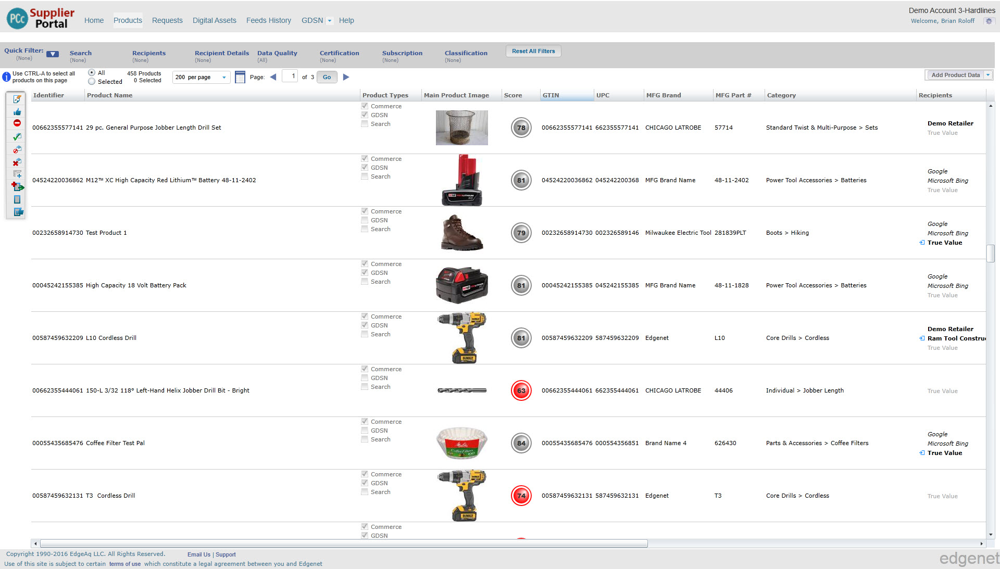
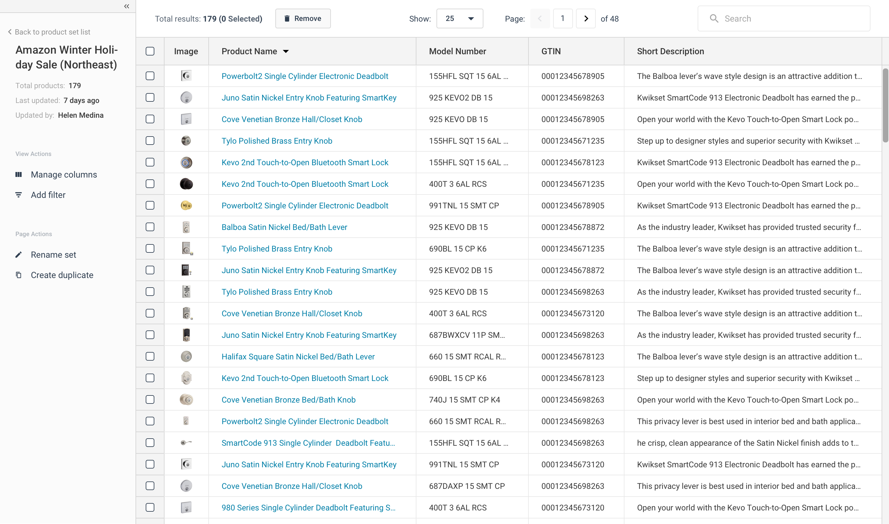
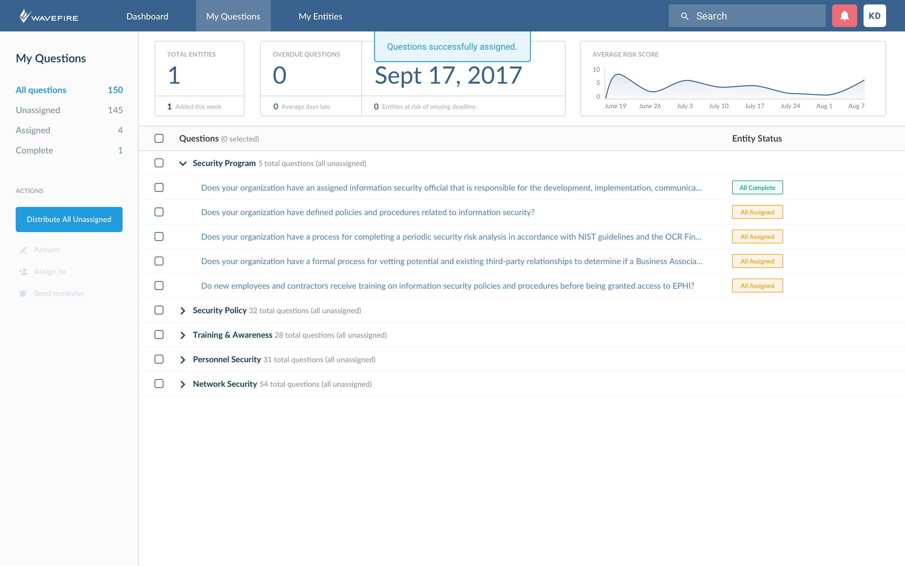
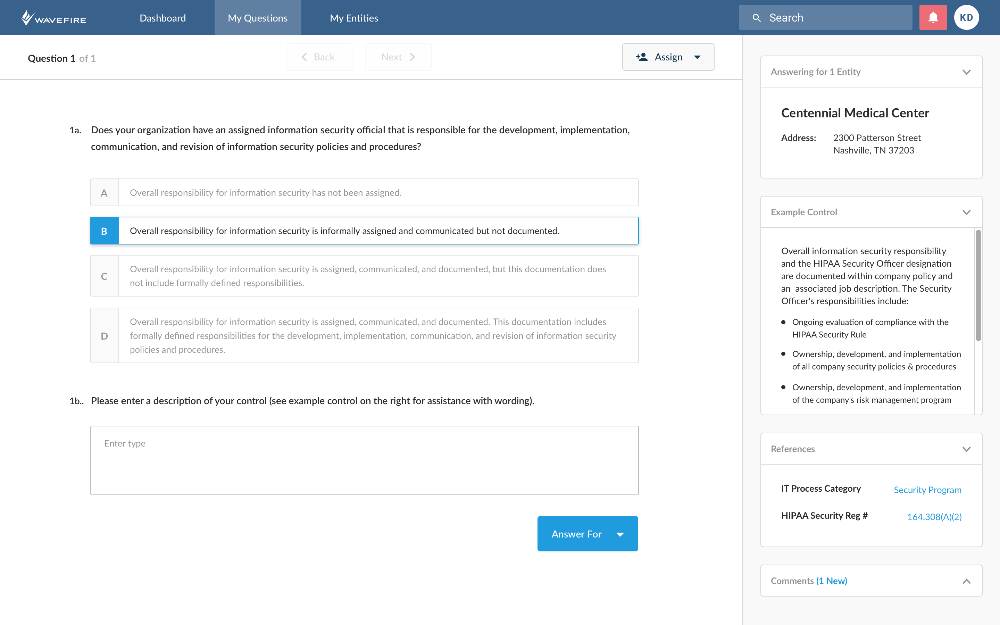

Edgenet — Lead Product Designer
Based in Nashville, TN, Edgenet is a growth-stage SaaS company that's product, utilized by more than 8,000 companies including Lowe's, Home Depot, GE, and Best Buy, makes the process of adding, managing, cleaning, and visualizing product data as simple and effective as possible. The product was originally built in 1990's with Silverlight, so the product's team task was to re-design and re-platform the product utilizing a more modern tech stack while ensuring that existing customers were supported during the migration.
Responsibilities
As the Lead Product Designer, I was responsible for managing the design team and developing the user experience and visual idendity for the re-design of the platform. My day-to-day focus ranged from conducting user interviews & usability tests to designing hi-fidelity mockups and prototypes.
Process
The following were steps involved in designing a feature during the re-design of the Edgenet platform. Please note: these steps were not completely sequential.
Visuals
A sample visual for the product was the re-design of how suppliers organized and sent products to retailers. The feature was revamped to mirror the functionality of creating playlists in Spotify, which significantly simplified the process of adding, cleaning, and sending data within "product sets".
Before: clunky, slow, and outdated UI that was confusing for users and difficult to understand where they were in the process of sending data to a retailer.
After: new UI was built to be as simple as possible for users with minimal exposure to technology (most users were recent grads at large companies). Primary focus of view is the product data within the set.
WaveFire — Lead Product Designer
WaveFire is an early-stage startup that's building a cloud-based platform that simplifies the process of completing a HIPAA securtiy risk analysis in complex organizations. During a six month consultant role, I was responsible with working alongside the founders and technical team to design, test, and implement the user experience and visual design of the platform.
Product goals
The product helps ensure that businesses of all sizes are compliant with HIPAA regulations and do not have unnecessary risk. With most users being non-technical and unfamiliar with HIPAA regulations, the goals for designing the product were to create simple, intuitive, and modern interface that walks users through the process in a TurboTax-esque experience.
Process
Creating the WaveFire process followed significantly more iterative process that heavily focused on rapidly prototyping aspects of the product for testing and funding purposes.
Visuals
A sample visual for the product was the re-design of how suppliers organized and sent products to retailers. The feature was revamped to mirror the functionality of creating playlists in Spotify, which significantly simplified the process of adding, cleaning, and sending data within "product sets".
 Outcome
At the end of the engagement, the product was delivered to the founders in a way that was ready to be developed and utilized to continue fundraising/sales efforts. All deadlines were met and expectations exceeded (sounds corny, I know) throughout the duration of the project.
splitsecnd — VP, User Experience
Founded in Nashville, splitsecnd was the first plug-and-play crash response, roadside assistance, and driving analytics IoT product and platform on the market. Over the course of my 2.5 years with splitsecnd, my role focused on develping the simplest experience for drivers of all ages ranging from teens to aging seniors.
Primary focus
As the VP of User Experience, my responsibilities included overseeing the product design and brand team developing the end-to-end product experience ranging from packaging to web & mobile applications. In addition to this, I spent a significant amount of time working with the CEO and sales team leading product demos with potential customers and investors in the United States, Europe, and Middle East.
Detailed responsibilities
Throughout my time with splitsecnd, I was responsible for the following tasks: